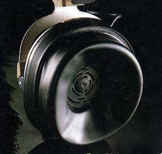

ニューマライトTMクッション

コスの特徴ともいえる、中空のビニールクッション。内部の空気圧が正常ならば、かなりの遮音性がある。かつてカタログでは、平均周辺雑音遮蔽度40dBと記載していた。一時はベロシティ型を除く全機種に採用されていたこともあるが、1980〜1990年代にだいぶ採用機種が減った。しかしサイト開設時（2009）の最上位機種MV1には新バージョンのニューマライトが採用されている。